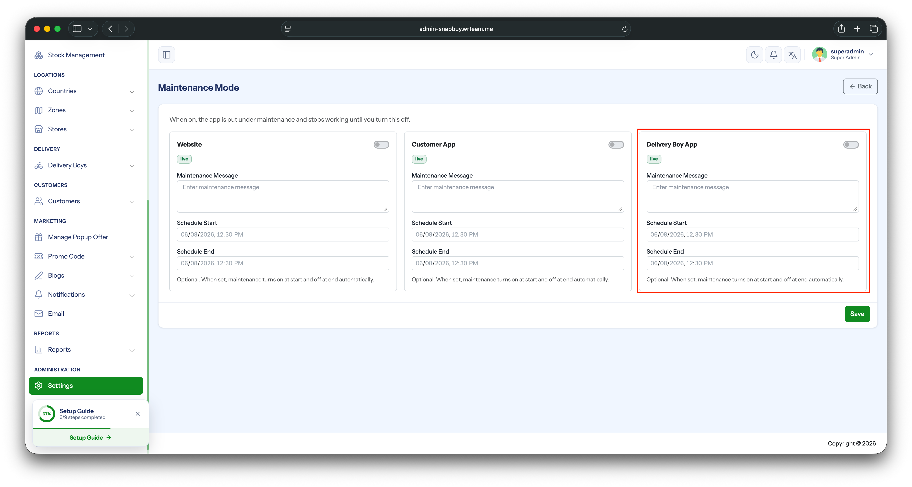

Maintenance Mode
Temporarily lock the app while you perform server updates, database migrations, or any work that should not be exposed to live users.
How to Enable
- Open your Admin Panel.
- Navigate to Settings → Website & Apps → Maintenance Mode tab.
- Toggle Maintenance Mode ON.
- Click Save.

How It Works
- While maintenance mode is ON, the app blocks normal navigation and shows a full-screen maintenance message on launch (and on any subsequent API call).
- Users cannot browse products, log in, or perform any action — they only see the maintenance screen until you turn it off.
- Once you toggle maintenance mode OFF and save, the app resumes normally on the next launch / API refresh — no app update or republish is required.
TIP
Use this whenever you need to push database changes, swap a payment gateway, or run admin-side migrations, so users don't hit half-broken states during the change window.